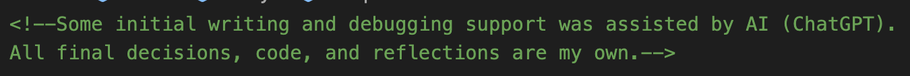

I need to show my working process more. The workbook is showcasing my learning from the course, not the final product.
I will add sections such as:
I will add the acknowledgement comment on top of my code file if I have used AI in any part of my development of this project.
I will add a "Go to previous page" button to make navigation more intuitive.
For example: on each week's subpage, I will add a “Back to Week Overview” link.
Instead of just showing code snippets, I should showcase how I used the code I learnt to add interactivity to my site.
I’ve added a 2B experimentation page showing my understanding and p5.js practice. Each week has its own themed "music player" interaction.
@media for responsiveness